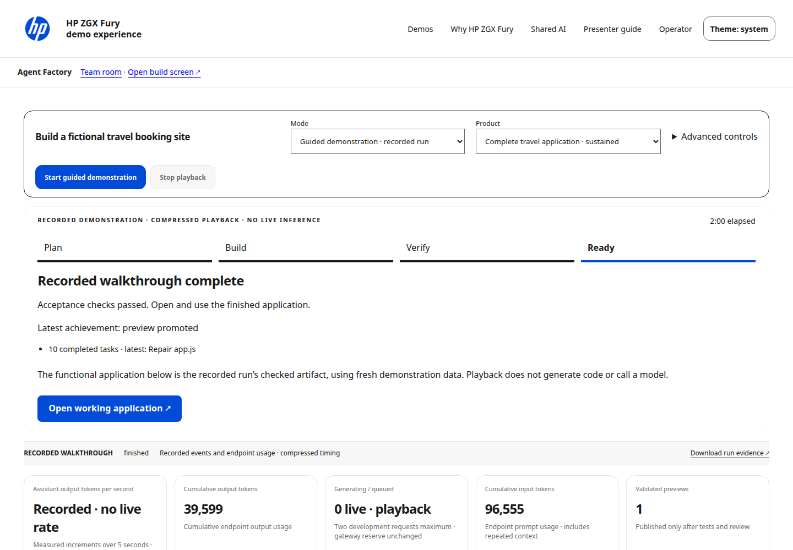
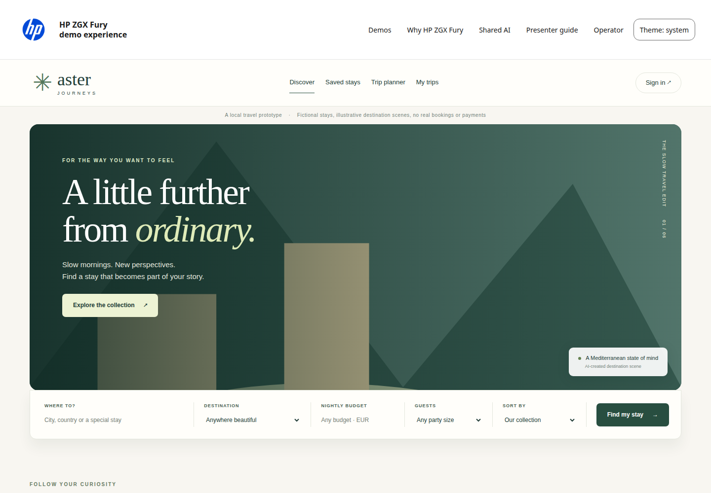

HP ZGX Fury · Colorado deployment · v2.1.1
ONE PAGE QUICK START
From a prepared Fury
to a working showcase.
For HP sellers, channel partners and the site administrator. Start on a supported Fury with its working GPU driver and CUDA toolkit. This package does not install drivers or change the kernel.
Before you startUbuntu 24.04 ARM64 · GB300 with 256703 MiB HBM · at least 700 GiB RAM · 350 GiB free disk · internet for approximately 194 GiB of model files and dependencies. Administrator prerequisites are on page 2.
1. Download this exact release
git clone --branch v2.1.1 https://github.com/Navigatedhustle/hp-zgx-fury-showcase.git
cd hp-zgx-fury-showcase
2. Launch
./launch.sh
The command checks resources and ports, prepares pinned environments and models, builds the presentation editor, initializes fictional data, starts services and waits for readiness. Keep the terminal open during setup. Cold compilation may take tens of minutes.
3. Open and present
Open http://localhost:8080 on the Fury. Choose Agent Factory → Guided demonstration for a predictable recorded walkthrough, or Live build for genuine local development. The application's travel frontend foundation is disclosed.
4. Check or stop
./launch.sh status
./launch.sh stop
Recipient remote access uses the site's own Tailscale deployment (page 3). Verification was performed on the existing test Fury; no fresh Colorado OS, driver installation or physical remote client is claimed.
Requirements and downloads
| Component | Supported / measured baseline |
|---|
| Hardware | NVIDIA GB300, reported 256703 MiB HBM; measured system RAM 743.65 GiB. Launcher requires ≥700 GiB RAM. Smaller GPUs and other architectures are unverified. |
| Operating system | Ubuntu 24.04.5 LTS ARM64; measured kernel 7.0.0-1019-nvidia-64k, driver 595.99.02, CUDA toolkit 13.3.33. Other combinations need site validation. |
| Storage | 350 GiB initially free; model files 193.91 GiB, plus tools, environments, compiler caches and outputs. Maintain 40 GiB after setup; Factory refuses new builds below 20 GiB. |
| Host tools | Python 3.12, curl, CA certificates, tar/xz, gcc/g++, make, bwrap, prlimit, flock, apt-get/dpkg-deb, libsndfile1, working NVIDIA driver and /usr/local/cuda/bin/nvcc. |
An administrator may install missing ordinary Ubuntu packages:
sudo apt-get install curl ca-certificates xz-utils \
build-essential bubblewrap util-linux libsndfile1
Unprivileged bubblewrap namespaces must work. If AppArmor blocks them, ask the administrator for a narrow policy for bubblewrap. Keep isolation enabled. Chromium may require additional OS libraries; inspect with .venv/bin/python -m playwright install-deps --dry-run chromium.
What downloads during setup
Pinned official Hugging Face model revisions, Python packages, Node tools, Chromium and initial NVIDIA compiler resources. Network policy must permit those HTTPS sources plus configured Ubuntu repositories. The model manifest records individual hashes; downloads use cached partial metadata and resume on rerun.
Models: DeepSeek V4 Flash NVFP4, Qwen3.6 27B NVFP4, FLUX.2 klein 4B, Kokoro and Zipformer. Review upstream model terms in config/model-pins.json and docs/ASSET-MANIFEST.md. These pinned public sources require no publisher credentials or gated-model acceptance token. Source licenses and model terms remain applicable.
Release ZIP alternative
Download the ZIP and SHA256SUMS from the v2.1.1 release. In the download directory:
sha256sum --ignore-missing -c SHA256SUMS
unzip hp-zgx-fury-showcase-v2.1.1.zip
cd hp-zgx-fury-showcase-v2.1.1
chmod +x launch.sh showcase
./launch.sh
Use Colorado's own Tailscale
The site administrator enrolls the Fury into the site's own tailnet, enables HTTPS certificates, and checks its access policy. No London hostname, personal tailnet, enrollment key or private configuration is included. Keep app services on loopback.
Administrator: configure private Serve routes
After local readiness, review existing Serve routes before changing them:
tailscale status
tailscale serve status
tailscale serve --bg --https=443 http://127.0.0.1:8080
tailscale serve --bg --https=8200 http://127.0.0.1:8200
tailscale serve --bg --https=8501 http://127.0.0.1:8501
tailscale serve --bg --https=8765 http://127.0.0.1:8765
tailscale serve --bg --https=8800 http://127.0.0.1:8800
tailscale serve status
Use the HTTPS hostname printed by this site's Serve command. Home uses port 443; the demo links use that same hostname and their component port. Grant access only to the intended demo ports. Model and gateway ports 8000, 8100 and 8001 stay private to the host. This guide does not enable public Funnel.
Presenter: accept a machine share and connect
- Install and sign in to your own authorized Tailscale client.
- An Owner, Admin or IT admin shares this Fury from the Machines page and sends you the invitation link.
- Open and accept the invitation while signed in. Tailscale requires an Owner, Admin or IT admin role in the receiving tailnet to accept a machine share. Ask that administrator to help if needed.
- Connect the client. Open the site's supplied HTTPS home URL. Test all four demo links, application preview, backend view and a download before the customer call.
Demo access is separate from host administration.A machine share does not provide an OS login, SSH key or administrator rights. Do not distribute those credentials to presenters. Restrict host-management access separately. The travel administrator account is a public fictional app account, not a host administrator.
Official references, checked November 2026: Serve command · Machine sharing. Site policy and the installed Tailscale version govern the final configuration. Remote physical-client acceptance remains a site step.
Choose the right demonstration
| Live build | Guided demonstration |
|---|
| Real local DeepSeek and Qwen requests create and repair files, then execute checks. Full travel supplies a disclosed maintained frontend and generates backend and QA. Short examples generate the frontend too. | Replays an authentic successful travel run in compressed time. Recorded events and endpoint usage are labeled. Its curated checked application uses public vector scenes instead of private runtime imagery and fresh isolated session data. No live inference or live token rate is claimed. |
Simple presenter path
- Choose mode and project. Press Start once; the job is saved.
- Follow Plan → Build → Verify → Ready. The current task, latest achievement, elapsed time and preview requirements are visible.
- Open the application when the first checked version is available. Use it while later checks continue.
- When another checked version is offered, refresh at a convenient moment. The current preview keeps its pinned code and backend until then.
- Expand Backend & test evidence to show real inventory requests and check results. Technical role/model details and logs are optional.

Completed presenter interface. Guided mode visibly identifies recorded playback and its functional artifact.
No invented completion percentage or token threshold. First live travel preview requires backend tests, generated QA and initial browser bootstrap checks. Full browser and persistence acceptance determine Ready. Failed later work retains earlier checked versions. Stop cancels your own run; reconnecting the same browser retains ownership.
Show the working applicationA useful customer story

Aster Journeys: preserved travel frontend, real isolated backend and fictional records. Destination scenes are illustrations; no real reservations or payments.Two minute presenter script
“This shows a development workflow running locally on the Fury. In Live mode the local models build and test the application. For this predictable walkthrough I am showing a recorded successful run, alongside its working application.”
“The stages show actual development and checks. Input and output totals come from endpoint usage. Live output rate measures observed output increments over five seconds during generation; it does not measure whole-job throughput or include tool execution.”
“Now I can search stays, register a fictional user, save a stay, create an itinerary and make a demonstration reservation. Refresh shows that data persists. The backend view proves that this is more than a static page.”
Demonstrate authentication and administration
Use a fresh fictional email on example.test and a demonstration-only password. Saved stays, itineraries and reservations require sign-in. The application's public demo administrator is admin@example.test, password DemoAdmin2028!. Its inventory and sanitized reservations view are fictional application features. Do not reuse these credentials.
Keep customer messaging grounded: HP system design, tower / 5U rack options, HP Z Toolkit and HP Z Runtime are documented capabilities. This showcase actually serves through its existing vLLM gateway; it does not claim Toolkit or Runtime integration. See docs/HP-CLAIMS.md for sourced wording.
Demonstrate genuine overlap
Open four browser tabs from the home catalog. Use Live build, not guided playback, for this demonstration. The measured envelope is a bounded shared workstation, not unlimited users.
| Workflow | Suggested input |
|---|
| Agent Factory | Live build → Short travel demo → Start. Automatic review is available in Advanced controls. |
| Atlas | “What happens to Q4 profit if our Commit stage win rate drops by 8 percentage points?” |
| Presentations | “Explain reliable local AI workflows, evidence, human review and next steps.” |
| Image Studio | “A detailed botanical illustration of a red fox in an autumn garden, natural light, no text.” |
Submit the other three while Factory is actively generating. Show useful outputs and the Operator evidence. A moving display or simultaneous submission alone does not prove inference overlap; verification uses actual backend execution intervals and measured usage.
Operating limits
- One Live Factory build at a time. Another presenter receives a visible HTTP 429 busy response and can retry after it finishes.
- At most two development model requests; the complete travel pipeline uses sequential tickets. The shared gateway admits four upstream requests, with at most three ordinary admissions and one Atlas reserve.
- DeepSeek serves one sequence; Qwen serves up to four. Context/output limits and GPU headroom still constrain each workload.
- Guided playback has a separate bound of four simultaneous recordings. It does not occupy model capacity, but its functional backend still consumes CPU resources.
- Minimum directly sampled free HBM in this acceptance run was 9810 MiB on the 256703 MiB GB300. This is a measured sample, not a guarantee for larger workloads.
- Many invited Tailscale users do not imply many simultaneous model workloads. Stagger new builds and retain disk headroom.
Before an event
Launch early, allow kernel compilation, run each workflow, check audio if used, and verify the remote client. Keep a guided walkthrough ready. Avoid clearing model caches before a presentation.
Exact commands and remedies
./launch.sh status
./launch.sh diagnostics
./launch.sh recover agent
./launch.sh restart agent
./launch.sh stop
./launch.sh setup
Inspect active jobs before recovery or restart. Diagnostics contain local operational details; review before sharing. Stop uses verified process ownership. Do not kill a process solely because it owns a port.
| Symptom | Remedy |
|---|
| Busy build | Wait for the active presenter. Cancel only your own run. A browser disconnect does not cancel it. |
| Lost browser connection | Reconnect with the same browser/profile and cookies. The durable job reconnects. A new profile cannot inherit another presenter's job. |
| No preview yet | Read current task and checks. No fixed token threshold exists. Keep the build running unless it reports failure or cancellation. |
| Blocked acceptance | Expand failure details. A retained full travel run can resume from its merged files; the previous checked preview remains available. Short builds can be rerun. |
| Setup interrupted | Rerun ./launch.sh setup. Existing downloads and caches are reused. Remove only the specifically named corrupt model file before retrying a checksum failure. |
| Models not ready | Check logs/lead.log and logs/text.log. Cold compilation may take tens of minutes. Fix the reported prerequisite rather than substituting a model. |
| Port occupied | Stop the owning installation with its own launcher. Do not launch a second model stack. Foreign services are intentionally refused. |
| Isolation / browser failure | Have the administrator repair bubblewrap or Chromium prerequisites on page 2. Never disable the sandbox. |
| Remote link fails | Verify client connection, accepted share, site policy, Serve status and correct site hostname/port. Validate locally before changing network configuration. |
Update and rollback
Back up runtime outputs and wait for all jobs to become idle. For a Git installation:
./launch.sh stop
git fetch --tags origin
git switch --detach v2.0.0
./launch.sh setup
./launch.sh
To return to this release use git switch --detach v2.1.1, then setup and launch. For ZIPs, stop with the current directory's launcher and start the separately retained previous release. Preserve outputs; never copy process registries. V2.0 has no Guided mode: use a fresh browser profile and keep recorded artifacts labeled recorded.
Know what you received
Public source repository
Versioned v2.1.1 release and downloads
Complete redistributable asset package
hp-zgx-fury-showcase-v2.1.1.zip contains explicitly selected source, working launcher, pinned dependency locks, model manifests/downloader, configuration templates, examples, fictional initialization, guided recording and its matching application, approved logo, redistributable fonts/assets, documentation, recovery tools and this PDF.
config/distribution-files.json is the inclusion policy. SOURCE-SHA256SUMS binds individual included files; release SHA256SUMS binds archives. The package and Git tag identify the same source release. Large weights download during setup; they are not in Git or this ZIP.
No credentials, private tailnet settings, runtime databases, presenter sessions, private run logs or licensed HP fonts are distributed. The recorded example is deliberately curated fictional demonstration code and sanitized recorded milestones, not an export of private session state.
Verification scope
161 Factory regressions and 19 core checks passed. Four real Live builds completed during a 44.10-minute concurrent soak: 689 passing workflow results and measured four-way backend overlap in every cycle. Two final recorded playbacks and 13 travel browser/API checks passed. See docs/FACTORY-VERIFICATION.md for measurements, earlier failed attempts and operating limits.
The installation verification uses separate clone and extracted-release directories on the existing Fury, with existing cached tools/models where documented. It is not a fresh Colorado hardware, OS or driver installation and does not establish physical remote network or audio quality. The site must perform its own final remote acceptance.
Repair hardening: the previously blocked travel run recovered using actual local inference and passed backend, 15 generated tests, browser and persistence checks. Output-starved repairs now use measured-budget localized edits and separately scoped dependency repairs. The earlier soak was not repeated for this patch.
Metrics and honesty
Input/output totals use model endpoint usage records scoped to this job and survive reconnect. Unknown usage is labeled unavailable. Live output rate uses measured increments in a five-second observation window during generation. Whole-job elapsed time includes waiting and tools. Recorded totals belong to the captured run; guided playback never presents them as live generation or GPU activity.
HP / NVIDIA marks belong to their owners. This demonstration is not an officially supported HP or NVIDIA product. See LICENSE, THIRD_PARTY_NOTICES.md, docs/HP-DESIGN.md and docs/HP-CLAIMS.md for terms and sourced statements.